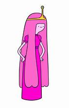
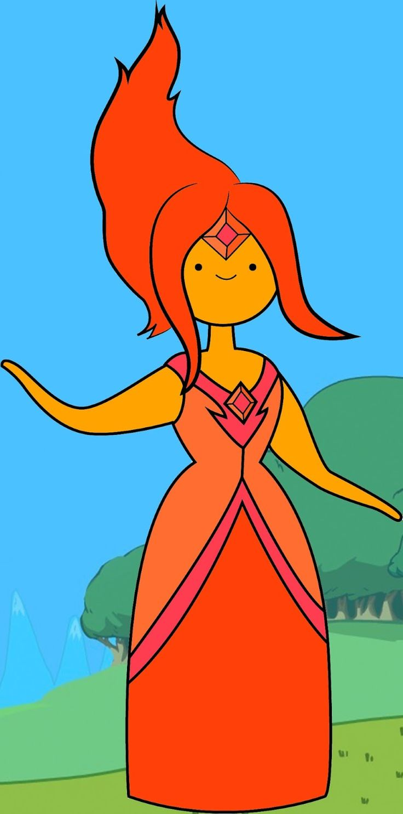

Adventure Time Side Characters
The Princesses
- Princess Bubblegum: A brilliant and kind ruler, Princess Bubblegum governs the Candy Kingdom. She’s both a scientist and a monarch, constantly balancing her duties as a leader with her strong friendships and a hidden romantic side.
- Lumpy Sapce Princess: Lumpy Space Princess is known for her sassy, dramatic, and self-absorbed attitude. She constantly refers to herself in the third person and enjoys using her signature catchphrase, "Oh my glob!" LSP can come off as shallow and self-centered, but beneath the layers of attitude, she's often shown to have a caring and vulnerable side. She's a loyal friend, albeit with a tendency to overreact and make everything about her. Despite her love for drama and attention, Lumpy Space Princess has moments where she demonstrates compassion, especially when her friends are in need.
- Flame Princess: Flame Princess is passionate, energetic, and strong-willed, often displaying intense emotions. As a young and somewhat inexperienced princess, she sometimes struggles with controlling her powers, especially when she’s upset. Despite her fiery nature, she has a kind heart and a deep sense of empathy, although her temper can get the best of her, causing her to react impulsively. Flame Princess is independent and strives to be respected for who she is, not just her royal title. She can be tough and confident but also vulnerable, especially in relationships and her journey to understand herself and her powers.
- Breakfast Princess: Breakfast Princess is bubbly, enthusiastic, and sweet, with a strong love for breakfast foods. She is friendly, though sometimes she can be a little overzealous in her efforts to serve up her breakfast creations. Her cheerful and optimistic demeanor often brings a sense of lightness to any situation. However, like many of the other princesses in Adventure Time, she does have moments of insecurity, particularly regarding her relationship with her kingdom and how she is perceived by others. She's often seen as the fun-loving and warm-hearted character, making her a hit among her friends and the citizens of Breakfast Kingdom.
- Slime Princess: Slime Princess is cheerful, playful, and a little quirky. She is very open-minded and tends to approach life with a lighthearted attitude, embracing the fact that she’s a slime with a fun and carefree approach. She’s genuinely friendly and loves to interact with the other inhabitants of Ooo. Despite her bubbly nature, Slime Princess is also quite sensitive, especially when it comes to her royal status and her identity. She has moments of insecurity about being taken seriously as a princess due to her slime nature, but she is ultimately proud of who she is. Her personality can be a bit sticky—figuratively and literally—as she tends to "stick" to people in the most literal sense, much to the annoyance of those around her.
Princess Bubblegum
Princess Bubblegum is intelligent, ambitious, and highly responsible. She is the ruler of the Candy Kingdom and the creator of many of the candy people and lifeforms that inhabit it. She was made from bubblegum by the ancient wizard who manipulated her genetics, which gives her her unusual lifespan. Over the centuries, she has developed into a powerful leader and scientist, using her intellect and creativity to build a kingdom from scratch after the Mushroom War. Though her history is marked by her creation as a living, breathing piece of bubblegum, she quickly took on the role of protector and innovator. Her relationships are complex, particularly her long-standing bond with Marceline the Vampire Queen, as well as her occasional flirtations and emotional connections with Finn. Princess Bubblegum's strength as a leader is undeniable, but it also carries a weight that she sometimes struggles to balance.
Lumpy Space Princess
Lumpy Space Princess hails from the mystical and isolated "Lumpy Space," a dimension populated by other beings like herself. Her backstory is a bit of a mystery, but she seems to have a somewhat rebellious streak and has often ventured into the world of Ooo, which is where she encounters the main characters of the series. Though her relationship with the other Adventure Time characters can be rocky, especially in her early appearances, LSP gradually becomes a beloved member of the group. Since the episode "To Cut a Woman's Hair," Lumpy Space Princess lived on her own in the woods of Ooo. According to her story in "The Monster," she lived among wolves, was banished, and began terrorizing a small village in order to eat their crops. She had returned to Lumpy Space, but as of "Princess Monster Wife," she decided to go back to living on her own in the woods as a hobo, presumably going back home every now and again to visit her parents.
Flame Princess
Flame Princess was born in the Fire Kingdom as a powerful fire elemental. She has a complicated history, especially with her father, Flame King, who raised her to believe that she must rule with strength and aggression. Despite her father’s harsh and domineering influence, Flame Princess strives to be her own person and to make her own choices. Her relationship with Finn starts with a volatile spark, but as they bond, she begins to experience the complexities of love and vulnerability. Throughout her journey, she grapples with controlling her immense powers, learning to navigate the challenges of both being a royal figure and an emotionally intense individual. As the ruler of the Fire Kingdom, Flame Princess has the responsibility of leading her people, but she is also a young princess trying to figure out her place in the world.